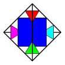

Genealogy | |
| Prev | Introduction | Next |
 In 1997 in Melbourne, David Letscher, Richard Rannard and Ben Burton under the guidance of J. Hyam Rubinstein planned out a program that would do normal surface theory and everything else besides. Much groundwork planning was done, epsilon code was written and then things kind of faded away. David Letscher revived the project on his own and in 1999 presented Normal 1.0. This program performed triangulation simplification and found vertex normal surfaces, was written in Java and was a proof-of-concept program that normal surface theory was computationally feasible.
In March 1999, David and Ben sat down to write a new version of the program from scratch. The new version would have a calculation engine written in C++ for speed and would have a Java GUI for portability. It would be carefully designed and written with rigour and extensibility in mind, allowing for the possibility of add-ons written by other people.
David however leads a busy life and pulled out of the project in late 2000, but remained to offer technical advice. In late 2000 a prerelease of the new program was ready and Regina 2.0 was uploaded to the web.
Since then, many more people have been involved in both small ways and large. Regina has also undergone some major structural changes over the years: In late 2003 the old Java user interface was completely removed in favour of a faster and cleaner native C++ user interface (written using the excellent KDE libraries), and the scripting interface switched from Jython to standard Python support. By 2012 the user interface had been ported from KDE to the more portable Qt, offering a much cleaner experience on MacOS and supporting Windows for the first time. In 2016 the underlying C++ code was redeveloped in a much more generic style, merging the existing 3-manifolds code with a long-running project with Ryan Budney on 4-manifolds, and creating a new infrastructure for exploring triangulations in dimensions as high as 15.
| Prev | Contents | Next |
| What does Regina do? | Up | Citing Regina |